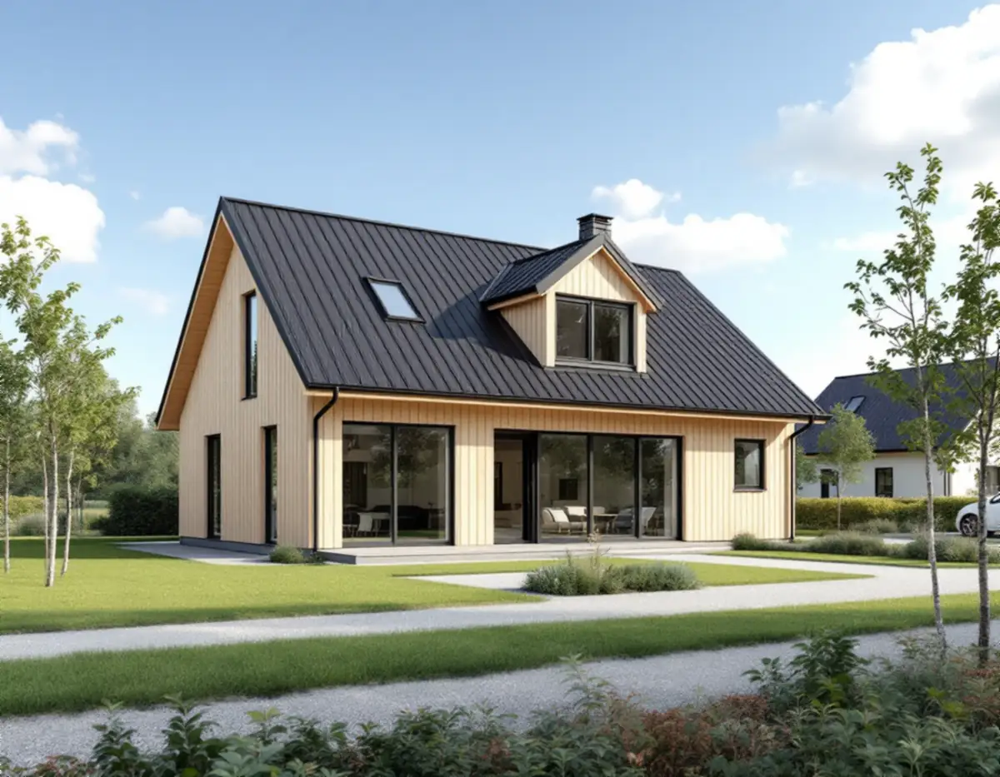
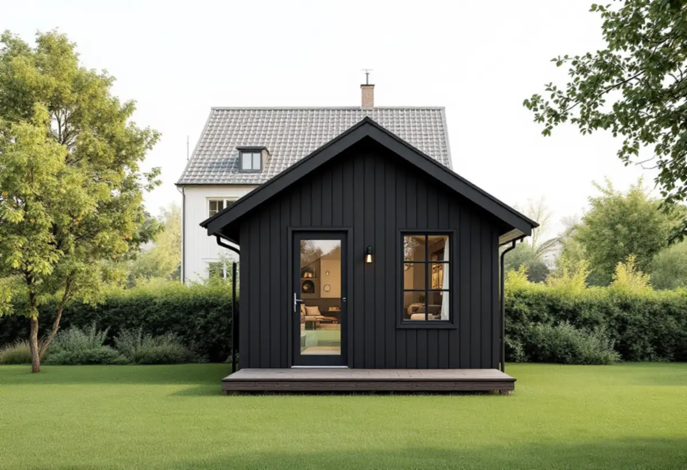

Platsbesök
Vi tittar på tomten, gränserna och var huset eller gästhuset kan stå.
I Sigtuna kommun, från Märsta och Rosersberg till Sigtuna stad och landsbygden runt omkring, kan ett större byggprojekt vara ett nytt hus eller ett extra bostadshus på tomten. Geal Entreprenad AB bygger nytt och bygger till som total entreprenad, och här är vad kommunen kräver för ett nytt småhus, när ett gästhus behöver bygglov och hur man gör om tomten är för liten.

Sigtuna kommun skriver att ett nytt eller flyttat en- eller tvåbostadshus kräver bygglov, oavsett om tomten ligger inom eller utanför detaljplan, och att bygget får börja först efter startbeskedet. Radhus, parhus, kedjehus och fritidshus kan räknas som en- eller tvåbostadshus, kolonistugor gör det inte. Beslut ska komma inom tio veckor från att ansökan är komplett, och tiden kan förlängas en gång med tio veckor för stora eller komplicerade projekt.
Till ansökan hör en anmälan av kontrollansvarig, en situationsplan på nybyggnadskarta, en markplaneringsritning, byggnadsritningar och en exteriörredovisning. Nybyggnadskartan ska vara uppdaterad och beställs från kommunens geodataenhet. Utanför detaljplan kan kommunen behöva ett godkänt avloppstillstånd innan bygglovet prövas, och kommunen rekommenderar att den kontrollansvarige knyts till projektet tidigt.
Ritningarna görs i skala 1:100. Planritningen ska vara möblerad så att tillgängligheten kan bedömas, fasadritningen ska visa befintliga och nya marklinjer fram till gatan och grannfastigheterna, och sektionen ska ha plushöjder för sockel och färdigt golv. Kommunen vill också ha ett färg-PM och ytuppgifter för byggnadsarea, bruttoarea, öppen area och boarea.

Ett komplementbostadshus är en fristående byggnad som är inredd som en egen bostad, till exempel för uthyrning eller som gäststuga. Det kräver bygglov om byggnadsarean är större än 30 kvadratmeter inom detaljplan eller 50 kvadratmeter utanför, om nockhöjden överstiger 4 meter inom plan eller 4,5 meter utanför, om huset är lika stort som eller större än huvudbyggnaden, eller om det placeras närmare tomtgränsen än 4,5 meter utan grannens skriftliga medgivande.
Alla lovbefriade byggnader på tomten delar på en gemensam pott: högst 45 kvadratmeter inom detaljplan och 65 kvadratmeter utanför. Kommunen ger exemplet att en friggebod på 15 kvadratmeter och ett attefallshus på 30 kvadratmeter inom plan tar hela potten. Lov krävs också vid särskilt värdefulla byggnader eller i särskilt värdefulla områden och där detaljplanen eller områdesbestämmelser har utökad lovplikt.
Även utan bygglov ska en anmälan göras om vatten, avlopp eller ventilation installeras eller om brandskyddet påverkas. Till ansökan eller anmälan hör konstruktionsritningar för grund, stomme och tak, en teknisk beskrivning och ett förslag till kontrollplan, och entréplanet ska vara tillgängligt. Kommunen bedömer i varje ärende om en kontrollansvarig behövs. Mer om regelverket finns på sidan om attefallshus och regler.
Räcker inte tomten för det man vill bygga är det ibland kommunens mark som ligger närmast. Sigtuna kommun skriver att en sådan bit inte går att köpa i alla lägen, eftersom detaljplanen kan ange att marken ska vara till för allmänheten, och då får kommunen inte sälja den.
Går det att sälja behöver Lantmäteriet först göra en lantmäteriförrättning, marken värderas, köpehandlingar upprättas och Lantmäteriet gör en marköverföring. Köparen betalar marknadsvärdet för marken och Lantmäteriets handläggningskostnader. Det tar tid, så frågan bör vara utredd innan huset ritas in mot den nya gränsen.
Sedan 1 januari 2023 ska varje kommun ha en aktuell vattentjänstplan för hur behovet och utbyggnaden av allmänt vatten och avlopp ska tillgodoses. Sigtuna kommun och det kommunala VA-bolaget SIVAB har tagit fram en sådan plan, som nu är beslutad i kommunfullmäktige, med en karta över verksamhetsområdena för vatten, avlopp och dagvatten.
Kartan visar om tomten kan anslutas eller om vatten och avlopp behöver lösas på egen hand. Ligger tomten utanför detaljplan kan kommunen dessutom behöva ett godkänt avloppstillstånd för att pröva bygglovet. Sigtunakartan visar dessutom var en detaljplan gäller, är på gång eller utreds. Läs mer om nybyggnad av villa och om hela arbetssättet under byggfirma.
Vi tittar på tomten, gränserna och var huset eller gästhuset kan stå.
Sigtunakartan och verksamhetsområdet för vatten och avlopp kontrolleras.
Nybyggnadskarta beställs och ritningarna tas fram i rätt skala.
Mark, grund, stomme och installationer redovisas var för sig.
Bygglov eller anmälan med kontrollplan, sedan tekniskt samråd vid behov.
En kontakt för alla hantverkare fram till slutbeskedet.
Rotavdraget är 30 procent av arbetskostnaden, högst 50 000 kronor per person och år och högst 75 000 kronor tillsammans med rutavdrag. Du ska äga bostaden när arbetet görs.
Ett helt nytt hus ger inte rotavdrag, och inte heller en fristående byggnad som en gäststuga eller ett komplementbostadshus. En tillbyggnad på befintligt hus ger avdrag om den sitter ihop med ytterväggen till minst 75 procent eller har en dörr emellan. Vi särskiljer det i kostnadsförslaget och gör avdraget direkt på fakturan.
Husets storlek, grundläggningen, om avloppet ska lösas på tomten och hur mycket mark som ska planeras väger tyngst. Efter ett gratis platsbesök får du ett skriftligt kostnadsförslag.
Total entreprenad för villan.
Byggfirma →Takbyte, takbesiktning och plåtarbeten.
Takläggare i Sigtuna →Sigtuna stad, Märsta och Arlanda.
Takrenovering i Sigtuna →Potten, Arlanda och gårdshusen.
Attefallshus i Sigtuna →Anmälan, fläkt och dusch i stället för badkar.
Badrumsrenovering i Sigtuna →Gatufasad, gårdsfasad och uthus i stadskärnan.
Fasadmålning i Sigtuna →Puts i stadskärnan, panel i dalgången.
Fasadrenovering i Sigtuna →Arlanda, ljudisolering och fönster i Sigtuna.
Fönsterbyte i Sigtuna →Bevarandeplanen, gammalt glas och fönsterkulörer.
Fönsterrenovering i Sigtuna →Golv på platta, fuktmätning och radon.
Golvläggare i Sigtuna →Stadskärnan, Märsta och Rosersberg.
Målare i Sigtuna →Plåttak, rännor och beslag i Sigtuna.
Plåtslagare i Sigtuna →Staket, dörrar och gårdshus i stad och dalgång.
Snickare i Sigtuna →Lov, checklista och gårdarnas tegel.
Takbyte i Sigtuna →Ny tapet i äldre trähus.
Tapetsering i Sigtuna →